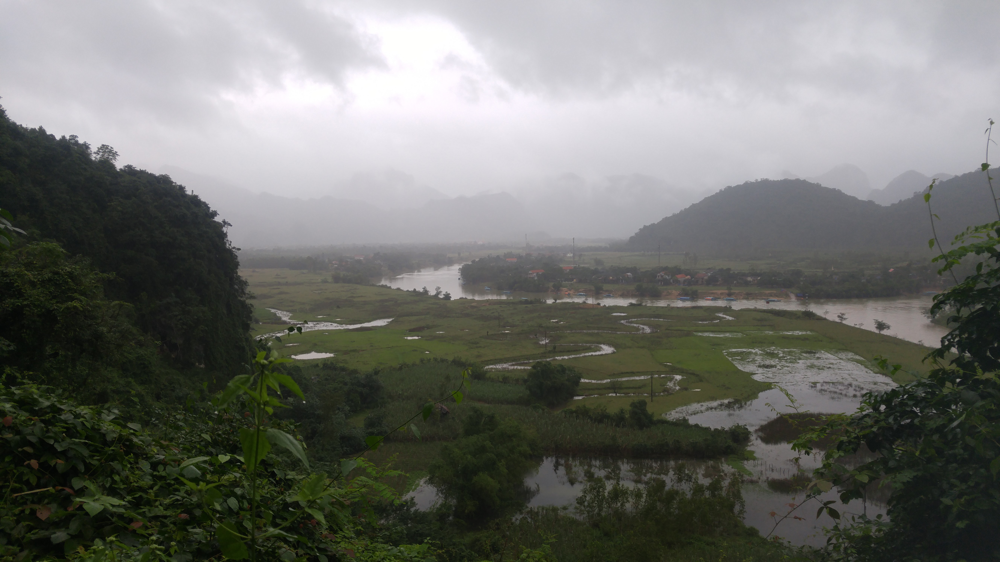

Go Back
Phong Nha Caves/ Dong Hoi

Phong Nha is the name of a little town and also the adjacent cave system. It's beautifully situated alongside a river with plenty of limestone karsts that are also a common sight in most of North Vietnam. This area is most famous for having Son Doong Cave, the deepest cave in the world. This cave is so deep that it has it's own environment and weather inside. However, when I checked the tour price it comes to a whopping 3000 usd. For many tourists this is out of the question, however, there are other fun activities to do and many other caves to see. I only spent 2 days in the Phong Nha area and 3 nights in Dong Hoi which is a town about an hour away. Aside from the caves I mention below there are many river rafting and adventure activities that looked like a lot of fun.
The Phong Nha Caves were amongst the best I've ever seen in my life. The caves are full of natural colourful stalactites and stalagmites that I don't know I've ever seen to the same extent as here. The entry fee costs 150,000 vnd (~7 usd) and you also will have to pay for a boat to take you up the river to it as it's hidden in the jungle off the river. The boats cost about 360,000 vnd (~17 usd) for 1 round trip but usually there are other tourists waiting for boats so the cost is split between all the people who take the boat.
Paradise Cave is another cave near Phong Nha. This one requires a bit of a hike up a mountain but rewards you with a massive cave system. The formations in this cave weren't as colourful as in the Phong Nha Cave but the size and shape of them was very impressive. This cave felt taller and more cavernous while Phong Nha Caves were a bit tighter and lower. The hike itself is also nice and makes for a solid experience in Vietnam.
I stayed in the town of Dong Hoi which is a local Vietnamese town. I preferred to stay here to also experience the culture as the Phong Nha town primarily caters to tourists. The Buffalo Bar and Hostel is where I stayed and if you're into backpacking I'd recommend it as a good hostel to stay at. They have games like pool, good food and help arrange things like tours or motorbike rentals. If you're priority however is to explore as much of the cave area as possible it's probably better to stay in Phong Nha as Dong Hoi is about an hour or hour and a half away by motorbike. In Dong Hoi you'll find popular Vietnamese food and traditional local favourites like karaoke bars and street food stands. Be mindful of the time of year you visit the area. I was expecting tropical weather like much of South Vietnam but was surprised and caught off guard when it was 10-15 degrees and raining. It's a good idea to bring some warmer clothes here though I think I happened to visit during an irregular storm and it was coincidentally colder than normal.